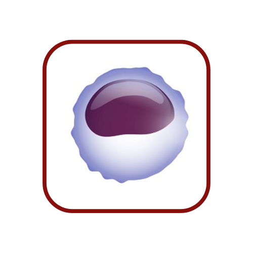
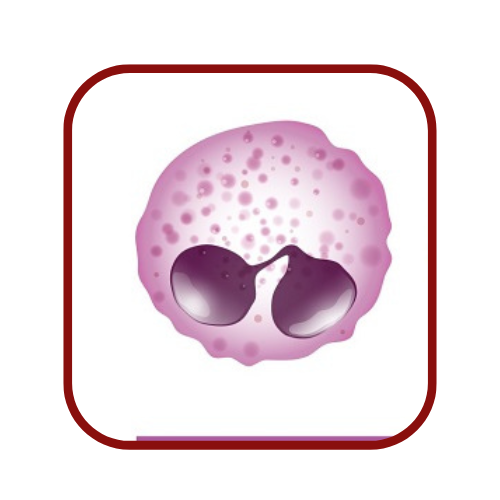
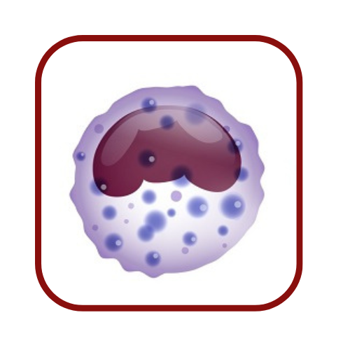
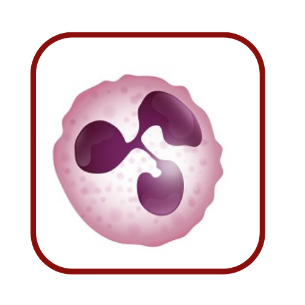

Leucócitos, também chamados de glóbulos brancos, são elementos figurados do sangue, assim como hemácias
e
plaquetas. A produção de leucócitos é feita na medula óssea, que é o tecido esponjoso no interior dos
ossos. Essa produção é controlada por uma variedade de fatores, incluindo a presença de infecções,
doenças autoimunes, estresse, entre outros. Quando ocorre uma ameaça ao organismo, como uma infecção, a
medula óssea produz mais leucócitos para combater a ameaça.
Os leucócitos são produzidos a partir de células-tronco hematopoiéticas, que são células precursoras
presentes na medula óssea. Estas células-tronco passam por diferenciação e maturação para se tornarem
diferentes tipos de leucócitos, cada um com funções específicas na defesa contra invasores.
Os leucócitos são células importantes do sistema imunológico que têm como objetivo proteger o organismo
contra invasores estranhos, como vírus, bactérias e outros patógenos. Eles desempenham um papel crucial
na
defesa contra doenças e infecções. Além de proteger contra invasores, os leucócitos também desempenham
um papel importante na identificação e destruição de células anormais, como células cancerosas. Eles
também podem ajudar a regular a resposta imunológica, evitando reações imunes excessivas e autoimunes.
Em resumo, os leucócitos são essenciais para a saúde e proteção do organismo, e a sua produção e função
é regulada por uma série de fatores. Anormalidades no número ou função de leucócitos podem estar
associadas a uma série de doenças e condições, incluindo infecções, doenças autoimunes e certos tipos de
câncer.
Tipos de leucócitos
Cada tipo de leucócito tem uma função específica no combate a invasores. Os leucócitos são geralmente
classificados em dois grupos principais: granulócitos e agranulócitos.
Granulócitos são leucócitos que possuem grânulos em seu citoplasma, que contêm enzimas e outras
substâncias necessárias para combater invasores. Eles incluem neutrófilos, eosinófilos e basófilos.
Agranulócitos, por outro lado, são leucócitos que não possuem grânulos em seu citoplasma. Eles incluem
monócitos e linfócitos.
Em resumo, a divisão de granulócitos e agranulócitos é uma forma de classificar os diferentes tipos de
leucócitos e destacar as suas funções específicas no sistema imunológico. Cada tipo de leucócito
desempenha um papel importante na defesa contra invasores e na proteção do organismo contra doenças.




Linfócitos
Linfócitos são leucócitos que são produzidos em maior quantidade durante uma infecção e, portanto, são um bom indicador da saúde do paciente. Há dois tipos principais de linfócitos: B e T, que desempenham funções diferentes no sistema imunológico.
A quantidade de linfócitos pode ser avaliada através de um exame de sangue. Se estiverem acima do esperado, geralmente indicam infecção, enquanto uma diminuição pode estar relacionada a problemas na medula óssea. Os linfócitos B são células imaturas produzidas na medula óssea que produzem anticorpos contra bactérias, vírus e fungos. Já os linfócitos T são produzidos na medula óssea e se desenvolvem no timo, dividindo-se em três grupos: CD4, CD8 e citotóxicos.
Monócitos
Os monócitos são as maiores células brancas observadas em exames de sangue, com um núcleo ovalado na periferia do citoplasma. Eles são precursoras do sistema de defesa fagocitário, pois são uma etapa na maturação das células mononucleares fagocitárias da medula óssea. Estas células entram no sangue por alguns dias e, quando saem dos vasos, entram nos tecidos onde se transformam em macrófagos.
Os macrófagos teciduais fagocitam bactérias e outros resíduos e permanecem por mais tempo no local da inflamação. Além disso, o monócito-macrófago também participa da resposta imunológica concentrando antígenos e apresentando-os aos linfócitos.
Eosinófilos
Eosinófilos são leucócitos que têm a função de combater parasitas, como vermes, e outros invasores estranhos ao organismo. Eles também desempenham um papel importante na resposta imune contra alergias e doenças inflamatórias, como asma e rinite alérgica. Eles são capazes de realizar fagocitose, ou seja, a ingestão e destruição de partículas estranhas ao organismo, incluindo parasitas e bactérias. Além disso, eles também liberam enzimas que ajudam a digerir e destruir os invasores.
Basófilos
Basófilos são leucócitos que fazem parte do sistema imunológico e ajudam a combater infecções e alergias. Os basófilos possuem em sua estrutura inúmeros grânulos, que, em situações de inflamação ou alergia, por exemplo, liberam heparina e histamina para combater o problema.
Neutrófilos
Neutrófilos desempenham um papel importante na defesa do corpo contra infecções bacterianas e fúngicas. Eles são liberados pelo sistema linfático em resposta a uma infecção e são os primeiros a chegar ao local da infecção, onde consomem e destruem os agentes infecciosos.
Um nível elevado de neutrófilos no sangue pode indicar uma infecção aguda, como pneumonia, meningite ou sepse. Por outro lado, um nível baixo de neutrófilos pode ser um sinal de uma condição que afeta a produção de células sanguíneas, como a leucemia ou uma infecção crônica.